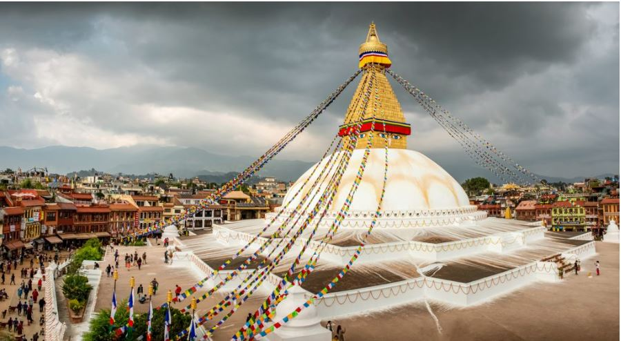
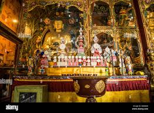
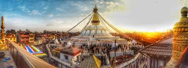
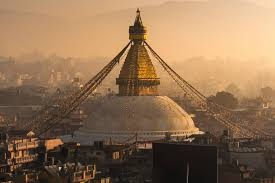

HISTORICAL
PEACEFUL E-Library for the
NEPAL Nepali Students
E-LIBRARY
HISTORICAL
PEACEFUL
E-Library for the
NEPAL Nepali Students
E-LIBRARY
⚲
Home
Historical Thinking
Browse History
About

 Boudhanath Stupa was founded in 600 AD by King Songtsen Gompa of Tibet. The stupa is one of the world's largest dome-shaped stupas. The dome is accurately proportioned and symbolic. The whitewashed dome and its gilded tower decorated with the all-seeing eyes of the Buddha act as a three-dimensional reminder of the journey of the Buddha to enlightenment. Highlights of the Boudhanath Stupa At the base of the stupa, there are 108 small images of the Dhyani Budhha Amitabh and a ring of prayer wheels The ‘mandala’ at the base of the stupa is one of the largest in the world Opportunity to observe local pilgrims and interact with them Buddhist Monasteries, art galleries, souvenir shops, and cafes surrounding the stupa are worth visiting
Bouddhanath Specility


